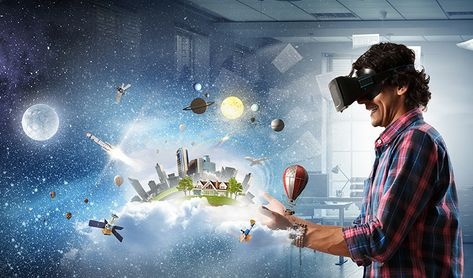

Introduction
Welcome to Virtual Horizons, where we explore contemporary cinema's immersive worlds. We will journey through VR in films like 'A Machine for Viewing', 'The Matrix', 'Free Guy', and 'Jumanji: Welcome to the Jungle'.
We will explore VR's impact on technology, identity, and human experience. Some of the challenges traditional perceptions of reality and agency. Navigate the blurred boundaries between the real and virtual worlds, and understand the transformative power of VR in shaping perceptions.
Theoretical Foundations
Firstly, Bazin's argument on depth of field and realism in cinema emphasizes the importance of capturing the three-dimensional depth of the real world to convey a sense of realism on screen. Bazin believed that the essence of cinema lies in its ability to reproduce reality, and depth of field plays a crucial role in achieving this. By allowing multiple planes to be in focus simultaneously, depth of field enhances the audience's perception of the spatial relationships within a scene, thereby creating a more immersive and realistic viewing experience.
Secondly, Prince's notion suggests that cinema has always aimed for immersion, yet it is limited by the interactivity factor critical for virtual realities. Prince argues that while traditional cinema can create a sense of immersion through narrative and visual techniques, it lacks the interactive element that is central to VR experiences. This highlights the inherent challenge in fully immersing viewers in cinematic experiences, as true immersion requires a level of engagement and participation that conventional cinema cannot provide.
"A Machine for Viewing" exemplifies VR cinema by pushing technological boundaries, offering viewers immersive storytelling experiences that transcend traditional cinematic constraints. This VR film integrates spatial storytelling and viewer interaction, allowing the audience to explore the narrative from different perspectives. By doing so, it blurs the lines between the spectator and the spectacle, making the viewer an active participant in the storytelling process.
Through VR experimentation, cinematic storytelling has entered an evolving landscape, allowing filmmakers to explore new narrative possibilities and immerse audiences in unprecedented ways. VR technology enables creators to craft stories that are not confined to the rectangular screen, providing a 360-degree canvas for storytelling. This evolution challenges traditional narrative structures and opens up opportunities for innovative storytelling techniques, such as branching narratives and environmental storytelling, where the environment itself becomes a crucial element of the narrative.
Barriers and Breakthroughs in VR Cinema
Accessibility and affordability remain significant barriers to the widespread acceptance of VR technology, limiting its accessibility to a broader audience.
Films like "The Matrix," "Free Guy," and "Jumanji" offer glimpses into VR's transformative potential by showcasing immersive virtual worlds and experiences.
These films invite audiences to contemplate alternate realities and their implications on perception and agency, challenging viewers to question the nature of reality and their place within it.
By presenting augmented realities within their narratives, these films encourage us to reflect on the transformative power of VR and its potential to reshape our understanding of the world around us.
Accessibility and Affordability & Narrative Evolution
Accessibility and Affordability
Despite the barriers of accessibility and affordability in VR technology, films like "The Matrix," "Free Guy," and "Jumanji" serve as windows into the transformative potential of VR, offering viewers a taste of its immersive capabilities.
These films not only entertain but also inspire audiences to contemplate the broader implications of VR beyond its technological constraints, sparking conversations about the future of storytelling and human interaction.
By showcasing VR's transformative potential, these films encourage viewers to envision a future where VR technology becomes more accessible and integrated into everyday life, opening up new avenues for exploration and creativity.
Ultimately, these cinematic experiences invite audiences to imagine a world where the boundaries between reality and virtuality blur, prompting reflection on the nature of existence and human agency in an increasingly digital age.
Narrative Evolution
Richard Misek's observation on cinema's confinement to a two-dimensional space underscores the traditional limitations of storytelling within the medium.
The narrative complexities of films like "The Matrix," "Free Guy," and "Jumanji" transcend these technological limitations by immersing viewers in augmented realities.
These narratives challenge conventional storytelling norms by inviting audiences into immersive worlds where traditional boundaries between reality and fiction blur.
Reflection on Virtual Realities
Virtual reality (VR) in films like "The Matrix," "Free Guy," and "Jumanji: Welcome to the Jungle" offers profound experiences that shape our perceptions of reality and agency. These films illustrate how VR can create immersive worlds that blur the lines between the real and the virtual, challenging our understanding of existence and identity.
VR Implications Beyond Entertainment

Societal Impact: VR has the potential to revolutionize social interactions and create new forms of community. It can address social issues by providing immersive simulations and experiences that foster empathy and understanding.

Ethical Impact: The rise of VR brings ethical concerns, including privacy, consent, and the potential for addiction. There is a need for regulation and ethical guidelines to ensure responsible use of this technology.

Philosophical Impact: VR challenges our concepts of reality and existence. It raises questions about what is real and how virtual experiences affect our understanding of life and consciousness.

Educational Impact: VR offers immersive learning experiences, making education more engaging and interactive. It can simulate real-world scenarios for training purposes, enhancing understanding and retention.

Healthcare Impact: VR is being used in healthcare for patient therapy, surgical training, and pain management. It provides a safe environment for medical professionals to practice and improve their skills.

Mental Health Impact: VR can be used for therapeutic purposes, helping individuals with anxiety, PTSD, and phobias by providing controlled, immersive environments for exposure therapy.

Artistic Impact: VR opens new avenues for artistic expression, allowing artists to create and share immersive, interactive experiences that go beyond traditional mediums.

Business Impact: VR is transforming the business world by offering virtual meetings, training sessions, and product demonstrations, enhancing remote collaboration and customer engagement.

Tourism Impact: VR enables virtual tourism, allowing people to explore destinations and experiences from the comfort of their homes. It provides a taste of travel and can influence travel decisions.

Gaming Impact: VR has revolutionized the gaming industry by providing fully immersive experiences, enhancing player engagement, and creating new genres and gameplay mechanics.

Architectural Impact: VR allows architects to create and explore virtual models of their designs, improving visualization, design accuracy, and client engagement before construction begins.

Scientific Impact: VR is used in scientific research to create simulations and visualize complex data, enhancing understanding and facilitating discoveries in various fields such as physics, biology, and astronomy.
Insights
| Aspect | Insight |
|---|---|
| Social Interaction | Virtual reality has opened new avenues for social interaction, creating virtual communities where people can connect regardless of physical distance. This technology can help address social isolation and foster global connections, providing a platform for shared experiences and collaboration. |
| Ethical Concerns | However, the rise of VR also brings significant ethical concerns. Issues such as data privacy, consent, and the potential for addiction need to be addressed. As VR becomes more integrated into daily life, it is crucial to establish regulations and ethical guidelines to protect users and ensure responsible use. |
| Philosophical Implications | Philosophically, VR challenges our understanding of reality and existence. It blurs the lines between the physical and digital worlds, prompting us to rethink what it means to have 'real' experiences. This can lead to profound questions about consciousness, identity, and the nature of reality itself. |
| Education | In education, VR has the potential to revolutionize learning by providing immersive and interactive environments. Students can explore historical events, travel to distant planets, or conduct scientific experiments in a safe, controlled setting. This can enhance engagement and retention, making learning more effective and enjoyable. |
| Healthcare | Healthcare is another field where VR shows great promise. From surgical training simulations to therapeutic applications for mental health, VR can improve patient outcomes and provide new tools for medical professionals. It offers a unique way to treat conditions like PTSD, phobias, and chronic pain through controlled, immersive experiences. |
| Artistic Expression | The artistic community is embracing VR as a new medium for creativity. Artists can create immersive installations that allow viewers to interact with their work in unprecedented ways. This not only expands the possibilities for artistic expression but also offers audiences a deeper, more personal connection to art. |
| Business | In the business world, VR is transforming how companies operate. Virtual meetings, training programs, and product demonstrations are becoming more common, enabling more efficient and engaging ways to collaborate and communicate. This can lead to increased productivity and innovation. |
| Tourism | The tourism industry is also being revolutionized by VR. Virtual tours of famous landmarks and exotic destinations allow people to experience the world without leaving their homes. This can influence travel decisions and make travel more accessible to those who cannot physically visit these places. |
| Gaming | Gaming has perhaps seen the most significant impact from VR, creating immersive worlds where players can experience games in entirely new ways. This has led to the development of new genres and gameplay mechanics, enhancing player engagement and pushing the boundaries of what is possible in gaming. |
| Architecture | Architects and designers use VR to create virtual models of buildings and environments, allowing them to visualize and adjust their designs before construction begins. This improves accuracy and client satisfaction by providing a realistic preview of the final product. |
| Scientific Research | Finally, in scientific research, VR offers a powerful tool for visualization and simulation. Scientists can create models of complex systems, from the microscopic to the cosmic, enhancing understanding and facilitating discoveries in fields such as physics, biology, and astronomy. |
| Ongoing Dialogue | As VR continues to evolve, it is essential to engage in ongoing dialogue about its impact on society. By sharing insights and experiences, we can collectively shape the future of this transformative technology and ensure it benefits humanity in meaningful ways. |